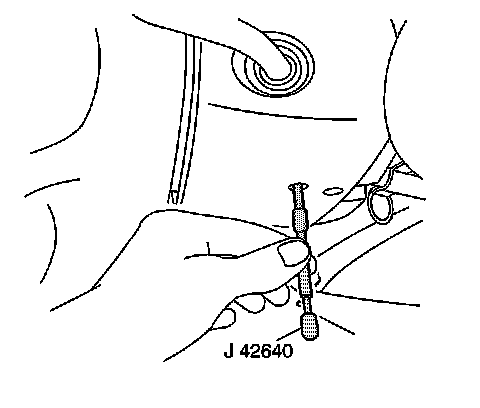
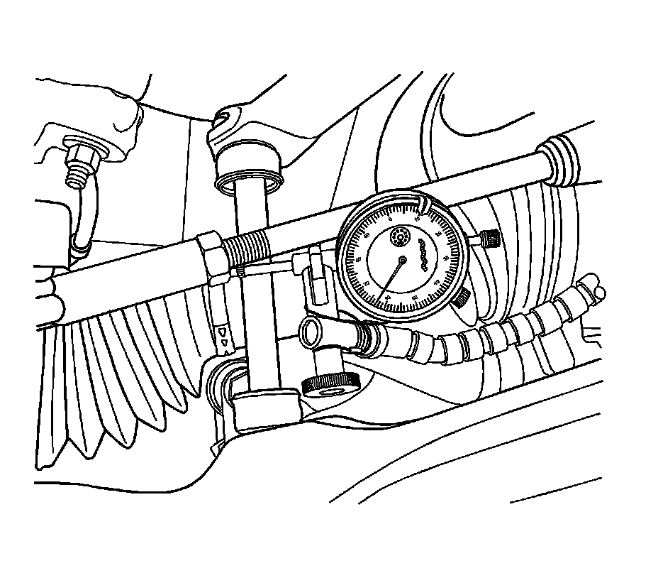

Steering Gear: Testing and Inspection
Rack and Pinion Steering Linkage Inspection
Tools Required
^ J 42640 Steering Column Anti-Rotation Pin
^ J 45101 Hub and Wheel Runout Gage
Left Side Steering Linkage
1. Elevate the left front of vehicle and install suitable vehicle support, maintaining contact between the right front wheel and shop floor.

2. Position the wheels in a straight-ahead position and install the J 42640.
3. Install a dial indicator between the outer tie rod and steering knuckle as shown and push inward to remove the lash slowly with one hand.
4. Place the dial indicator at zero, pull outward on the tire and note amount of movement in joint.
Movement should not exceed 1.0 mm (0.039 in).
5. Install the dial indicator between the outer tie rod end and jam nut and attach the other end to the relay rod as shown and push inward on the tire to remove the lash slowly with one hand.
6. Place the dial indicator at zero, pull outward and note amount of movement in the joint.
Movement should not exceed 1.0 mm (0.039 in).
7. Install the dial indicator between the pitman arm and relay rod as shown and push inward on the tire to remove the lash slowly with one hand.
8. Place the dial indicator at zero, pull outward and note the amount of movement in the joint.
Movement should not exceed 1.0 mm (0.039 in).
Right Side Steering Linkage
1. Elevate the right front of vehicle and install a suitable vehicle support, maintaining contact between the left front wheel shop floor.
2. Install a dial indicator between the outer tie rod and steering knuckle as shown and push inward to remove the lash slowly with one hand.

3. Place the dial indicator at zero, pull outward and note amount of movement in joint.
Movement should not exceed 1.0 mm (0.039 in).
4. Install the dial indicator between the outer tie rod end and relay rod as shown and push inward to remove the lash slowly with one hand.

5. Place the dial indicator at zero, pull outward and note amount of movement in the joint.
Movement should not exceed 1.0 mm (0.039 in).